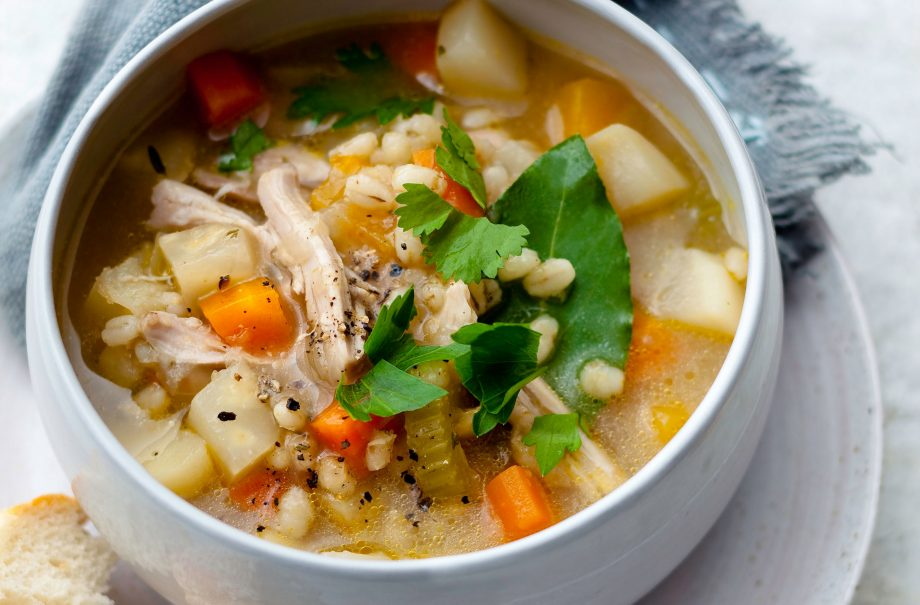

Hearty root and barley soup recipe

Serves:
Cost:
Prep:
Cooking:
Skill:
6
Cheap
15 Min
50 Min
Easy
Hearty root and barley soup is a great why of using seasonal veg and bargain buy meat. This cheap meal is great to keep both body and soul satisfied this winter. Packed with winter veg like carrot, swede and parsnips this broth is more like a small chicken stew in a bowl. Costing only £1.33 per serving, serve for a hearty, warming lunch or a simple dinner that is filling enough for the kids. You could try this recipe with beef instead or use already cooked chicken for an even quicker meal. This recipe serves 6 people and if there’s any left over, just pop in an airtight container and re-heat the next day. Serve with warm crusty bread.
Ingredients
- 4 chicken thighs on the bone, skinned, with fat removed
- 1 large onion, peeled and finely chopped
- 2 small bay leaves and a few sprigs of thyme or rosemary
- 1kg mixed winter veg — we used carrot, turnip, swede, parsnip and celeriac
- Salt and freshly ground black pepper
- Freshly chopped parsley, to garnish
- 2tbsp chopped fresh coriander
Method
- Bring the stock to the boil, then add the chicken thighs, onion and herbs. Cover and simmer over a low heat for 20 mins until the meat is tender.
- Peel and chop all the winter vegetables and trim and chop the celery. Take the chicken out of the pan with a draining spoon and set it aside.
- Put all the vegetables in the pan. Bring to the boil, then stir in the barley. Bring back to the boil, reduce the heat, cover and simmer for about 30 mins or until the vegetables are tender.
- Meanwhile, take the meat off the thigh bones, shred it and keep it warm. Season the soup and ladle it into bowls. Top with shreds of chicken and sprinkle with parsley. Serve with chunks of bread.
Top tip for making Hearty root and barley soup
Using chicken thighs is much cheaper than using chicken breast